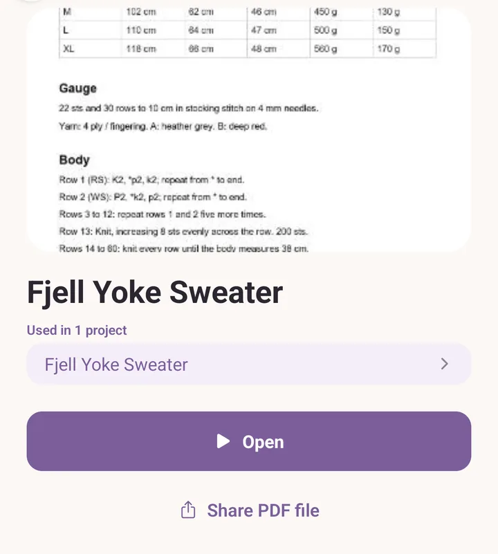
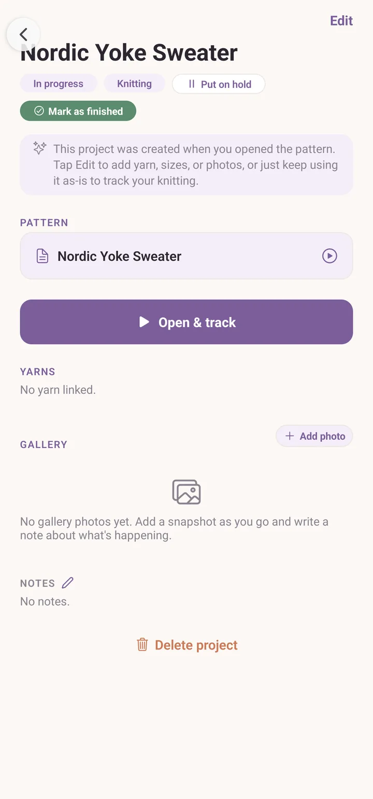
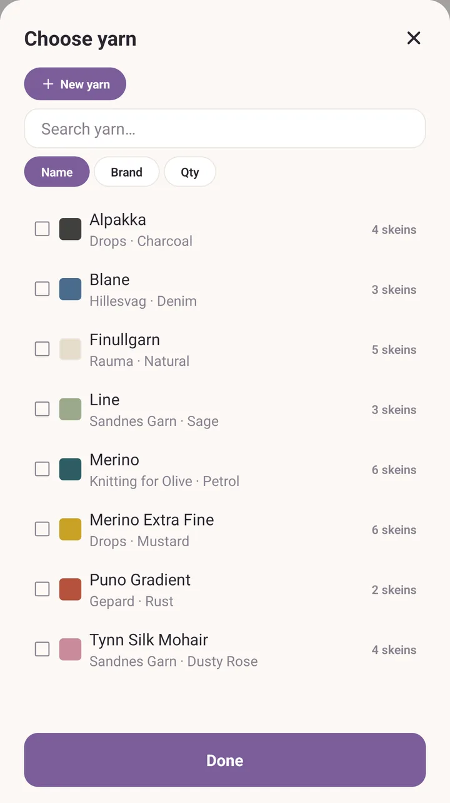
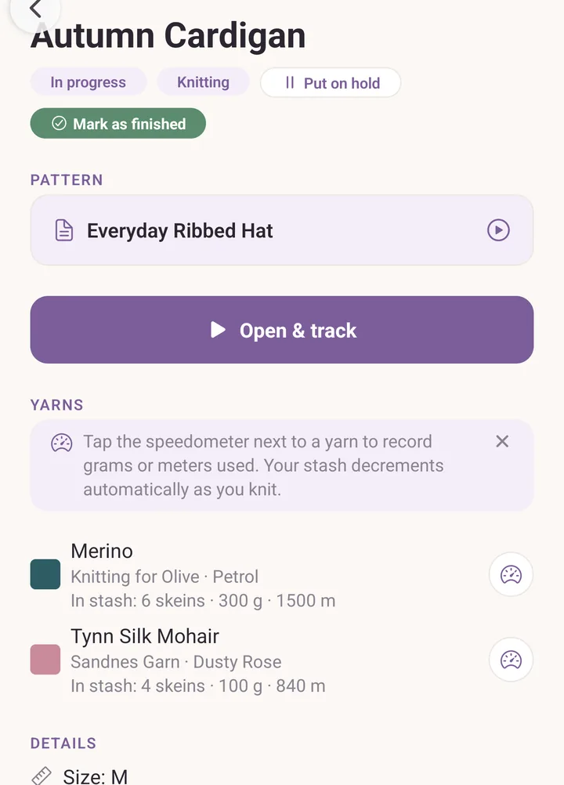

Your first project
At the end of this you will have a project that knows which pattern you are following and which yarn from your stash you are using it up on.
Before you start
If you already made a project from the three-step card on the Projects tab, open that one and pick this up at the yarn step. Otherwise you need two things already in the app:
- one pattern in Patterns, imported or written yourself,
- one yarn in Stash.
If you have neither, Getting started has the three-step card that puts them there.
Steps
Tap Patterns and tap the pattern you want to make. Its preview opens, with the cover, the notes and the buttons.
Tap Open. The pattern opens so you can read it, and Purl quietly makes a project for it, named after the pattern and already In progress. You do not have to do anything for this to happen.

Go back, then tap Projects. Your new project is sitting at the top, under In progress, with the pattern's name.
Tap the project. It tells you it was created when you opened the pattern, and invites you to fill in the rest.

Tap Edit. The project editor opens.
Scroll to Yarn and tap Add yarn from your stash. The Choose yarn picker opens with your whole stash in it.
Tap the yarn you are using. It becomes a row on the project. Add another if you are holding two strands or working a contrast colour.

In the Need box on that row, type how many skeins you expect to use. This is a guess and you can change it whenever you like.
Tap Save changes.
You are back on the project. Each yarn row now shows what you said you need, and how much of it is left in your stash. The speedometer button beside it is where you record what you have actually used.

Letting Purl choose the yarn for you
If the pattern lists the yarn it calls for, its preview carries one more button: Pick yarn from your stash. It opens Yarn for this pattern, which takes the pattern's colours one at a time and names the best match in your stash, or says plainly that nothing you own fits. Tap a suggestion to look at that yarn before you commit. The button only appears once the pattern says what it needs.
If it goes wrong
- Two projects for the same pattern. There will not be. Opening a pattern you have opened before takes you back to the project you already have, rather than making a second one.
- The yarn picker is empty. Your stash has nothing in it yet. Tap New yarn at the top of the picker, or go to Stash and tap Add.
- Save changes is greyed out. A project needs a name before it can be saved. Scroll to the top of the editor and give it one.
Next
- Projects, for statuses, photos, gauge and the rest of the project page.
- Read a pattern, for keeping your place once you actually cast on.